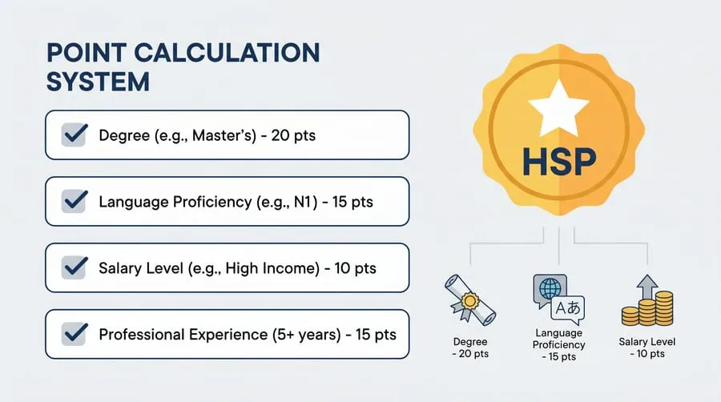

Japan's immigration landscape for foreign tech workers has been changing noticeably in 2026. Some changes tighten requirements — specifically around Japanese language ability — while others open new doors for remote workers and senior engineers. If you are planning to apply for a work visa, switch status, or accelerate your path to permanent residency, this article summarizes what matters most right now.
I will focus on changes that directly affect IT engineers and software developers, not the full spectrum of Japanese immigration policy.
2026 Changes at a Glance
| Change | Effective | Who It Affects |
|---|---|---|
| JLPT N2 now required for 国際業務 roles at Category 3–4 sponsors | April 2026 | Engineers at small/new companies |
| HSP salary thresholds raised to reflect 2026 wage levels | January 2026 | Points-based visa applicants |
| Digital Nomad visa processing moved fully online via J-Visit portal | March 2026 | Remote workers / freelancers |
| COE application portal upgraded — faster status tracking | June 2026 | All new work visa applicants |
| J-Find visa extended: eligible universities list expanded | April 2026 | Recent graduates job-hunting in Japan |
JLPT N2 Requirement: What Changed in April 2026
The most impactful change for engineers applying to smaller companies is the new JLPT N2 requirement for 国際業務 (Kokusai Gyomu / International Business) roles at Category 3 and Category 4 sponsors.
Previously, JLPT was technically optional for visa purposes — it was the company's internal requirement, not immigration's. Starting April 2026, ISA added a language proficiency requirement specifically for international business roles at companies with no prior track record of sponsoring foreign workers.
What this means practically
- If your role is classified as 技術 (Gijutsu / Technical Engineering) — backend, frontend, infrastructure, data — you are not directly affected. The N2 requirement applies to the 国際業務 sub-category only.
- If your role has a business/communication-heavy classification (translation, international coordination, global sales), N2 is now required at Category 3–4 companies.
- Category 1–2 companies (large listed corporations) are exempt from this requirement.
HSP Visa: Salary Thresholds Updated for 2026
The Highly Skilled Professional (HSP) visa uses a points system where salary is one of the highest-scoring factors. In January 2026, ISA revised the salary brackets upward to reflect Japan's ongoing wage growth trend — the first significant adjustment since 2022.
Updated HSP Salary Points (2026)
| Annual Salary (JPY) | Points (before 2026) | Points (2026) |
|---|---|---|
| Under ¥3,000,000 | 0 | 0 |
| ¥3,000,000 – ¥4,999,999 | +10 | +10 |
| ¥5,000,000 – ¥5,999,999 | +15 | +15 |
| ¥6,000,000 – ¥6,999,999 | +20 | +20 |
| ¥7,000,000 – ¥7,999,999 | +25 | +25 |
| ¥8,000,000 – ¥9,999,999 | +30 | +30 |
| ¥10,000,000 and above | +40 | +40 (new minimum threshold raised to ¥10M for this tier) |
The key change: the top bracket (40 points) now requires ¥10M+, up from ¥9M+. For most mid-career engineers earning ¥5–7M, the point values are unchanged. The adjustment mainly affects those using salary alone to hit 70+ points.

Digital Nomad Visa: Now Fully Online
Japan's Digital Nomad visa — officially the Designated Activities (特定活動) for Remote Work — allows foreign nationals to live in Japan for up to 6 months while employed by a company outside Japan. As of March 2026, the entire application process moved online through the J-Visit portal.
Key requirements
- Annual income of ¥10,000,000 (approximately USD 65,000) or more from your foreign employer
- Valid health insurance coverage
- Nationality eligible for visa exemption or from a treaty country (check the ISA website for the current country list)
- Working for a company not registered in Japan
What it does NOT allow
- Working for or billing Japanese clients directly
- Applying for a work visa or changing status from within Japan on this visa (you must leave and re-enter)
- Family members are permitted to accompany you, but they cannot work
Faster COE Processing via J-Visit Portal
In June 2026, ISA upgraded the J-Visit online portal for Certificate of Eligibility (COE) applications. Key improvements:
- Real-time status tracking — applicants and sponsors can see processing stage updates online instead of waiting for postal notifications
- Document upload — supporting documents (diplomas, transcripts, certifications) can now be submitted digitally, eliminating the need for paper originals at initial application for Category 1–2 sponsors
- Average processing time for Category 1–2 companies is now approximately 4–6 weeks, down from 6–10 weeks
- Category 3–4 companies still require full paper documentation and processing remains 2–3 months
J-Find Visa: Eligible Universities List Expanded
The J-Find (Job Seeker) visa allows graduates from top-ranked global universities to enter Japan for up to 2 years to search for employment, without needing a job offer first. In April 2026, METI expanded the list of eligible universities.
Who this matters for
- Recent graduates (within 5 years of graduation) from the eligible university list
- Engineers who want to job hunt in Japan directly rather than applying from abroad
- People who prefer to do in-person interviews before committing to a move
The full eligibility list is published on the METI website. In general, it covers QS World University Rankings top 100 institutions and a select list of Asian universities added in the April 2026 revision.
Action Checklist for 2026 Applicants
Based on all the changes above, here is what you should be doing right now if you are planning to work in Japan as an IT engineer:
Even if your visa category does not require it, having at least N3 reduces friction at every stage — with ISA, with employers, and with daily life in Japan. The next JLPT exam date: December 2026. Register early.
Larger listed companies process COEs faster, have experienced HR teams, and are exempt from the new JLPT N2 requirement. Platforms like Wantedly, LinkedIn, and Bizreach have dedicated foreign engineer listings at large companies.
The apostille process through your country's foreign affairs ministry takes 2–4 weeks minimum. Do not wait until you have a job offer — get it apostilled and certified-translated in advance.
Use the ISA self-calculation tool to check if you are already at 70+ points. If you are close, a single IPA certification or JLPT level-up may push you over the threshold and significantly accelerate your PR timeline.
If you meet the income requirement, the Digital Nomad visa lets you experience living in Japan for 6 months while actively building your network and interviewing, before committing to a full relocation.
FAQ
Q: I already have a Gijinkoku visa — do these changes affect my renewal?
Generally, no. Visa renewals follow the rules that were in place when your original visa was granted, as long as your job category has not changed. The JLPT N2 requirement is primarily for new applications at Category 3–4 sponsors in the 国際業務 sub-category.
Q: Does the HSP salary threshold change affect me if I already have HSP status?
No. The updated salary brackets apply to new HSP applications. If you are already HSP-designated, your status is not retroactively affected. However, if you are applying for the first time in 2026, use the new brackets when calculating your points.
Q: Can I switch from Digital Nomad visa to a work visa without leaving Japan?
No. The Digital Nomad visa is a Designated Activities status, not a work visa, and you cannot change status from within Japan to a sponsored work visa. You would need to leave Japan and apply for a COE from abroad with your new employer's sponsorship.
Q: I do not have a university degree. Can I still get a Gijinkoku visa?
Yes, if you have 10+ years of IT work experience or hold a qualifying IPA certification (such as the Fundamental Information Technology Engineer Examination). The degree is one path, not the only path. Read more in our complete visa guide.
Stay Updated
Japan's immigration policy for skilled workers is evolving faster than at any point in the last decade, driven by the country's acute labor shortage in tech. The direction is broadly positive for foreign IT engineers — more digital processes, faster tracks for high earners, and new options like the Digital Nomad visa. But requirements are also becoming more specific, particularly around language skills.
For the full foundation on how the visa system works, read the IT Work Visa in Japan guide. For context on what the job market looks like right now, see the Japan IT industry news roundup. And if you are thinking about permanent residency long-term, the permanent residency guide for engineers covers the full roadmap.
This article reflects immigration information as of October 2026. Visa regulations change frequently — always verify the latest requirements with ISA (moj.go.jp/isa) or consult a registered immigration lawyer (行政書士) before applying.